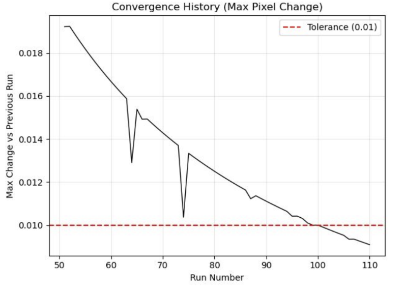
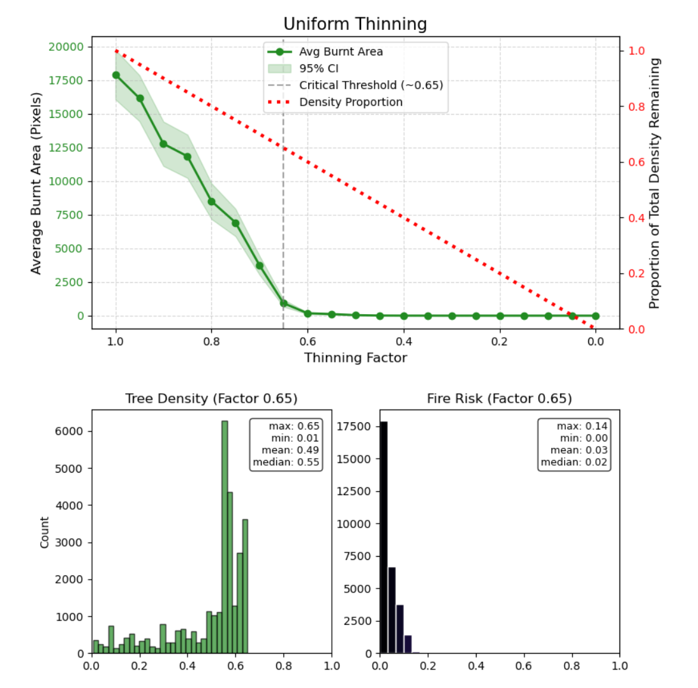
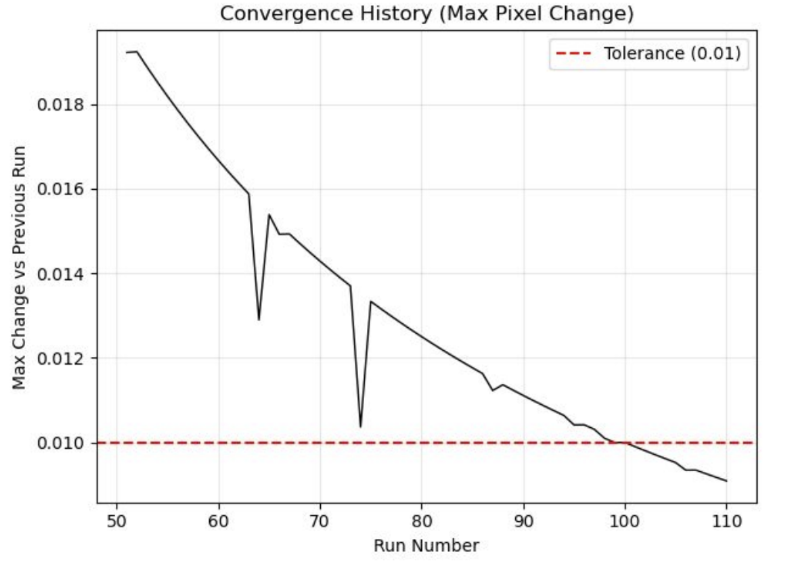
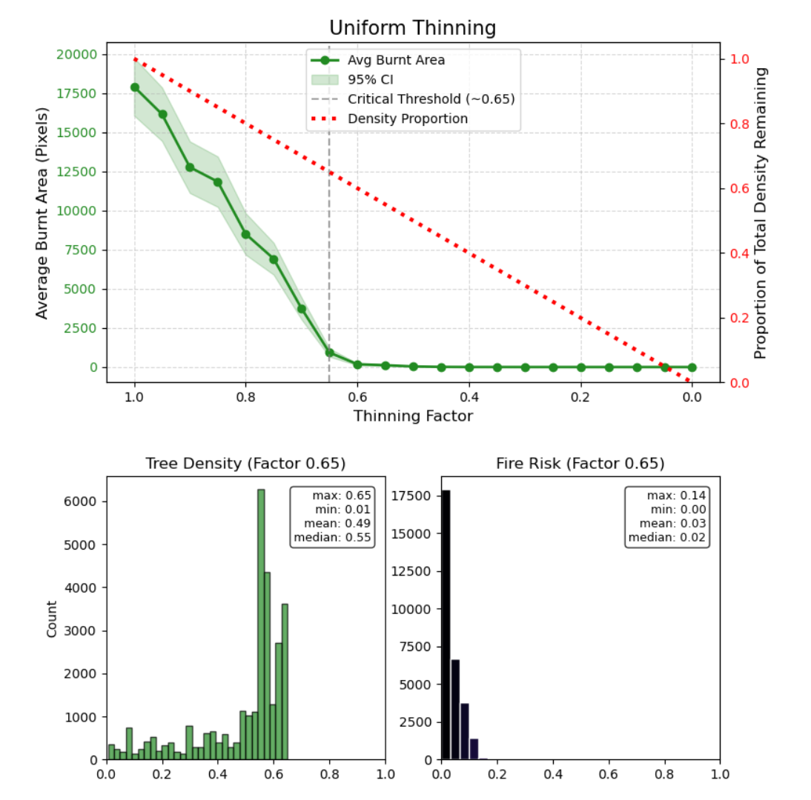
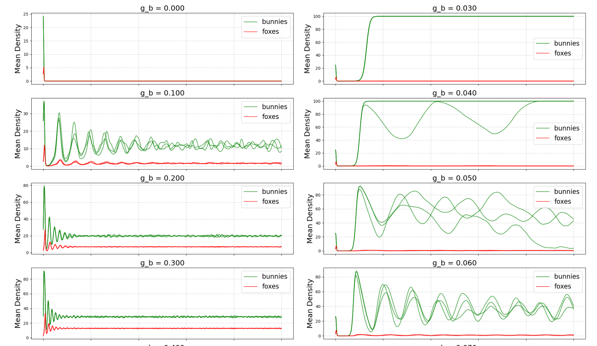
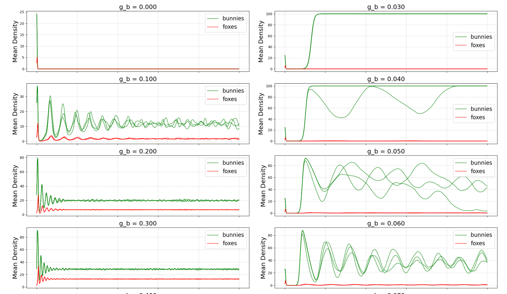
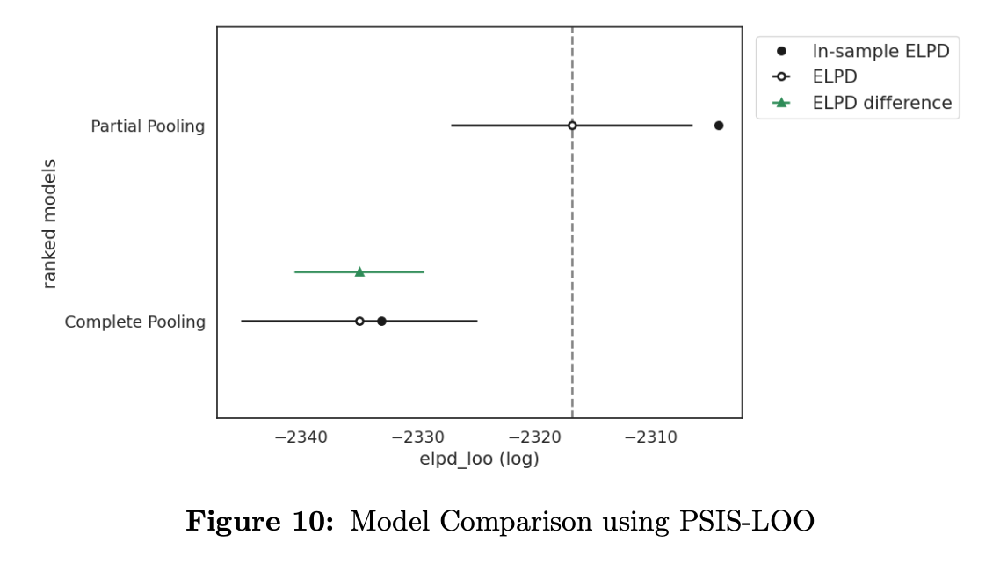
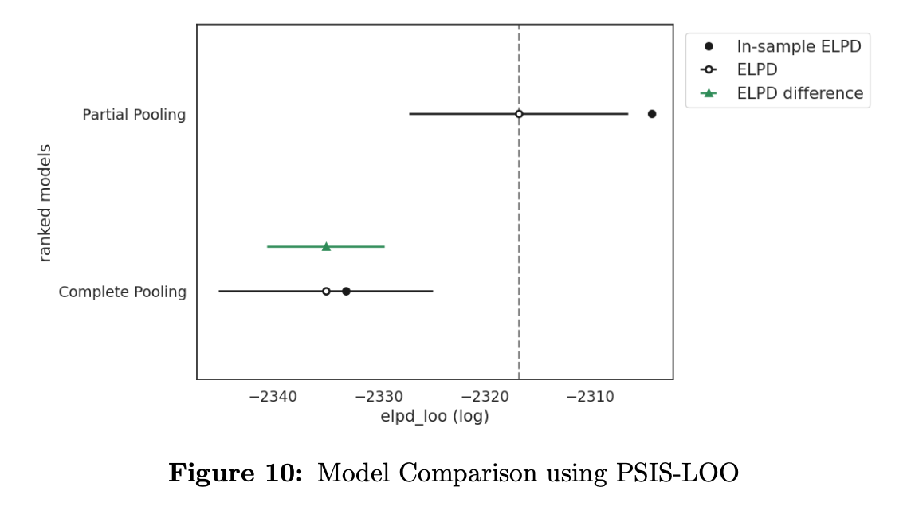

Portfolio
A collection of my research projects and technical work
Completed Projects
Network Analysis and Cellular Automata: Wildfire Spread & Intervention Analysis
Modeled wildfire spread in Western Germany using a network-based cellular automaton simulation. Incorporated complex dynamics such as wind intensity, fuel usage, and rain events to assess regional fire risk. Evaluated the effectiveness of interventions like targeted forest thinning and network-based barriers.
Key Results: Produced risk maps for Western Germany and demonstrated that targeted thinning significantly reduces average burnt area compared to random removal.
 



Discrete State Simulations: Berlin Traffic Modeling
Simulated traffic congestion in Berlin to analyze flow dynamics using density-based cellular automata rules. Modeled real-world road networks to investigate the relationship between structural "traffic pressure" and observed congestion.
Key Results: Discovered a Power Law relationship (log-log linear) with a coefficient of ~1.06 between traffic pressure and average congestion.
Sensitivity Analysis with Cellular Automata: Predator-Prey Ecosystem Modeling & Simulation
Implemented a reaction-diffusion Cellular Automaton model to simulate Fox-Bunny population dynamics. Explored how spatial structure facilitates species coexistence and analyzed the stability conditions for population cycles.
Key Results: Demonstrated the emergence of stable spatial patterns and identified critical growth rate thresholds for ecosystem viability.

 

SQL to CSV Streaming Converter
Developed a memory-efficient streaming parser to convert large SQL dump files (100MB+) into CSV format. Solved critical memory limitations of standard libraries by implementing a custom Finite State Machine that handles multi-line INSERTs, nested parentheses, and dynamic quoting without loading the full file.
Key Results: Achieved O(1) memory complexity and linear processing speed (~50-100 MB/sec), enabling the migration of gigabytes of production data at Alpha Sophia.


Hierarchical Modeling and MCMC: Bayesian Modeling of Football Attendance
Analyzed factors driving stadium attendance in the Argentine Primera División using hierarchical Bayesian frameworks. Compared Poisson and Negative Binomial regression models to decouple the effects of team popularity from scheduling factors (e.g., day of the week).
Key Results: Generated calibrated posterior predictions for missing match data (MAE < 5%) and identified significant "weekend effects" on attendance variance independent of team performance.
 

Bayesian Data Analysis: Educational Inequality in Argentina
Investigated the relationship between socioeconomic factors and standardized math test scores ("Aprender") across Argentinian secondary schools. Implemented and compared polynomial regression models with Normal vs. Student-T likelihoods to handle outliers and heavy tails in performance data.
Key Results: The Student-T model provided superior fit (lower LOO/WAIC scores), revealing that conventional normal models significantly underestimate the impact of socioeconomic status on educational outcomes in extreme cases.

Current Projects & Working Papers
Impact of Speed Limit Reductions in Wales
Title: Does Going Slower Really Make Us Safer?
Evaluating the causal effect of Wales' 2023 default speed limit reduction (from 30 to 20mph) on collision rates. Utilizing a Difference-in-Differences approach with Two-Way Fixed Effects to estimate policy impact while controlling for confounding variables.
Status: Final Project / Working Paper (Fall 2025)
Epidemiological Compartmental Model with Bayesian Inference
Affiliation: Minerva Mathematical Modeling Research Group
Reproducing and extending non-linear epidemiological models by translating R-based Bayesian frameworks into PyMC. Implementing ODE-based SEIR dynamics with advanced sampling techniques (NUTS, HMC) for robust parameter estimation and uncertainty quantification.
Status: Research Assistant (Aug 2025 - Present)
Sustainable Agriculture ML Indicators (Tanzania)
Co-authors: Prof. Ma (National Taiwan University), Ryan Li
Developing machine learning pipelines to generate sustainability indicators for Tanzanian smallholder farms using 2021 National Panel Survey data. Using clustering analysis and random forests to identify key drivers of environmental and economic sustainability.
Status: Manuscript in preparation